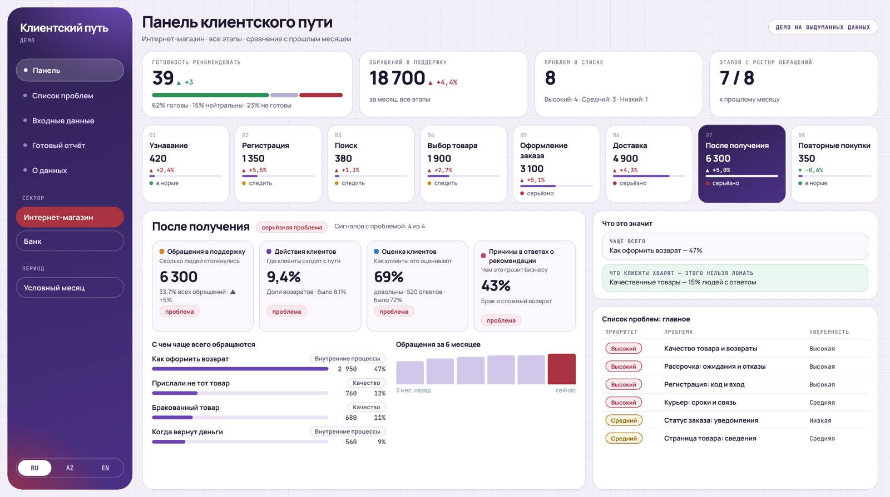

Анализирую процесс
Изучаю входящие данные, действия сотрудников и ожидаемый результат.
ИИ-автоматизация
Изучу ваш рабочий процесс: какие данные поступают, какие действия выполняют сотрудники и какой результат необходимо получить. Определю, что можно автоматизировать с помощью ИИ, где достаточно стандартных инструментов и какие решения должны оставаться под контролем человека.
Опишите задачу, которую хотите автоматизировать. Техническое задание не требуется.
01
Изучаю входящие данные, действия сотрудников и ожидаемый результат.
Определяю логику автоматизации и согласовываю с вами критерии успешного результата.
Проверяю решение на одном конкретном процессе и сценарии автоматизации.
Тестирую работу автоматизации и определяю, какие результаты требуют дополнительной проверки человеком.
На основе результатов пилота рекомендую масштабировать решение, доработать его или остановить внедрение.
02
Нажмите на карточку, чтобы узнать подробнее.
ИИ-инструмент для автоматизации исследовательских процессов: от постановки вопроса до подготовки отчёта.
Подробнее ↗Моя разработка
Система мониторинга удовлетворённости клиентов на разных этапах клиентского пути.
Подробнее ↗Для e-commerceСоздаю набор изображений для карточки товара на маркетплейсе на основе одной фотографии продукта.
Подробнее ↗Контакты
Расскажите о них на бесплатной консультации. Я помогу определить, какие процессы можно автоматизировать с помощью ИИ, а где достаточно стандартных инструментов.
Обсудить автоматизацию ↗Или свяжитесь со мной напрямую